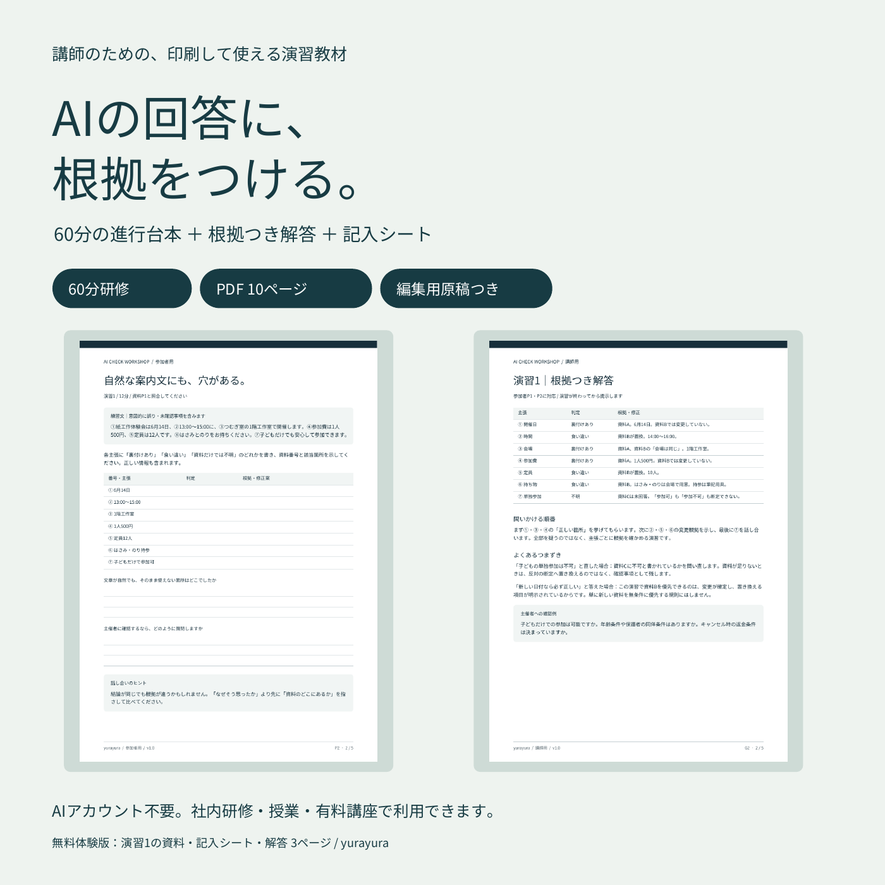

講師のための、印刷して使える演習教材
AIの回答に、
根拠をつける。
自然な文章を読んだあと、一度資料に戻る。
正しいところを残し、食い違いを直し、
分からないことを質問にする60分。
登録不要・A4縦のPDF。資料、記入シート、解答を収録。

演習は、3つ。
「どこを確かめるか」を練習する。
案内文の条件は合っている？
変更前のメモ、確定した変更連絡、未回答の問い合わせ。3つの資料から、7つの主張の根拠を探します。
数字が正しければ、理由も正しい？
4日間の架空データで合計・平均・増減を確認。「起きた変化」と「変化した理由」を分けて考えます。
分からない条件を、どう扱う？
資料と読み手、必要項目を指定する依頼文へ。案内文と、主催者に確認したい質問を書き分けます。
まず、無料版で。
資料に書いていないことは、
「間違い」と同じ？
子どもの単独参加について、資料には「質問が来たが、まだ回答していない」とあります。このとき、案内文をどう直すでしょうか。
無料版には、この問いの資料・記入欄・講師向け解答がそろっています。難しさと読みやすさを、購入前に確かめられます。
無料体験版をダウンロード「子どもだけでも
安心して参加できます。」
判定は、次の3つから。
- 裏付けあり
- 資料と食い違う
- 資料だけでは不明
判定だけで終わらず、どこを根拠にしたかを書きます。
進行に必要なものを、ひとまとめに。
- 参加者用PDF 5ページ：資料・演習・振り返りシート
- 講師用PDF 5ページ：時間配分・解答・進行台本
- 文言を編集できるMarkdown原稿
- 印刷・利用方法の案内
成人・高校生以上の入門者向け。AIを実際に操作する時間を入れなくても、紙と筆記用具で進められます。
有料版について
60分研修キット
980円 予定
現在は販売準備中です。このページでは購入・予約・決済はできません。
社内研修、授業、有料講座での利用を想定しています。購入希望や内容についての質問は、制作アカウントのXへお知らせください。
使う前に、知っておきたいこと。
AIが出した本物の回答を集めた教材ですか？
いいえ。確認の練習ができるように、意図的に誤り・未確認事項を含めた文章を制作しています。団体・日付・データはすべて架空です。構成・文章・組版の制作にはAIを使用し、資料と解答の対応、計算、PDFの表示を確認しました。
有料の研修で使ってもよいですか？
有料版は購入者本人または所属する1組織で、社内研修・授業・有料講座に回数制限なく利用できます。実際の受講者への印刷物・受講用PDF配布、内容の変更も可能です。教材ファイルそのものや改変版の再販売、不特定多数への公開はできません。
無料体験版はどこまで使えますか？
無料体験版の演習1は、個人の学習と授業・研修で使えます。参加者への印刷配布も可能です。ファイルそのものの再販売・転載はせず、このページへのリンクで紹介してください。無料版を使っても購入義務はありません。
PDFに直接入力できますか？ 編集できますか？
PDFは印刷・手書き用です。入力欄を備えたフォームPDFではありません。有料版のMarkdown原稿はテキストエディターなどで編集できますが、変更してもPDFは自動更新されません。
実際の研修での効果は検証されていますか？
現時点では、実際の参加者を集めた研修や学習効果の検証は行っていません。PDFの画面表示と例題の整合性を確認済みです。物理的な印刷テストも未実施なので、まず無料版でご自身の環境と対象者に合うかをご確認ください。